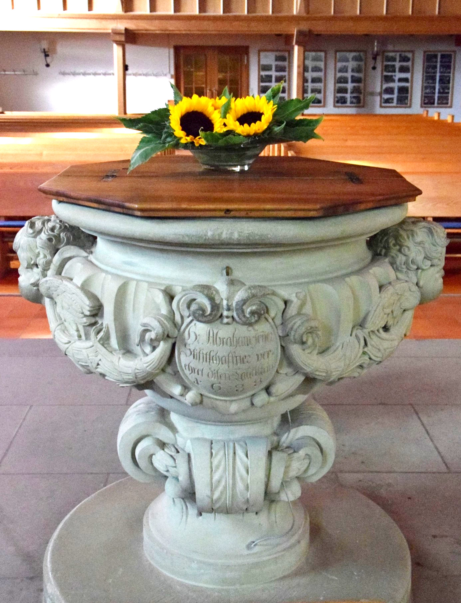
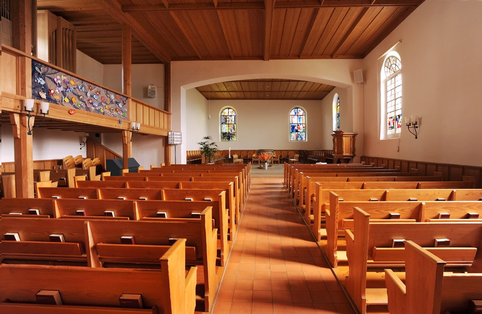
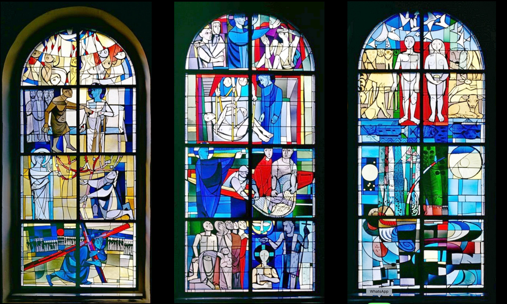

Dass eine reformierte Dorfkirche einen Namen hat, zudem noch den eines katholischen Heiligen, mag erstaunen, gibt aber bereits einen Hinweis zum Alter der Kirche: Sie muss bereits vor der Reformation, also vor 1528 bestanden haben. Soll es tatsächlich Königin Bertha von Burgund gewesen sein, die für Rüeggisberg eine Kirche gestiftet hat, so müsste diese bereits spätestens Mitte des 10. Jahrhunderts errichtet worden sein, denn Königin Bertha ist wahrscheinlich um 966 n.Chr. verstorben. Falls es eine Legende sein sollte, können wir aber dennoch davon ausgehen, dass die Kirche im 11. Jahrhundert gebaut wurde. Belegt ist, dass der Hochadlige Herr Lütold von Rümligen dem Kloster Cluny 1072 die neu errichtete Kirche Rüeggisberg und ausreichend Güter geschenkt hat, mit der Bitte in diesem Gebiet eine kleine Klostergemeinschaft zu gründen, wo dann auch für das Seelenheil seiner Familie gebetet werden sollte. Die Süd- und Teile der Westwand dieser Dorfkirche könnten aus der Gründungszeit stammen, aber auch nordseitig sind romanische Spuren vorhanden, so ein Blendbogen wahrscheinlich aus dem 12. Jahrhundert. Südseitig weist die Mauer eine gut sichtbare Wölbung auf. Es sind die mit dem Mauerwerk verbundenen Überreste eines ursprünglichen Südturms. Das Fundament dieses Turmes wurde in den 1960er-Jahren freigelegt und für heutige Betrachter sichtbar gemacht. Der rechteckige Chorabschluss ersetzte in nachreformatorischer Zeit, höchstwahrscheinlich erst im späten 18. Jahrhundert, eine frühere Apsis, wie Pläne und Kostendevis belegen. Bei einem gelegten Brand von 1532 sind Kirche und umliegende Häuser weitgehend zerstört worden. Die mit 1516 datierte Glocke hätte wohl kaum diesen Brand überstanden, wenn sie schon im Glockenturm gehangen hätte. Denkbar ist hingegen, dass die Glocke ursprünglich für ein Kloster im Bernbiet gegossen worden war, dann nach dessen Aufhebung in der Reformation 1528 vorrätig wurde und nach dem Brand als Ersatz für die zerstörte Vorgängerglocken nach Rüeggisberg gelangte. Der Glockenspezialist Matthias Walter schreibt sie dem Glockengiesser Hans Zender zu und zählt sie zu den klangvollsten mittelalterlichen Glocken des Kantons. 1967 wurden bei einer umfassenden Aussenrenovation durch Ulrich Indermühle historische Spuren freigelegt, die Turmgestaltung wieder dem romanischen Erscheinungsbild nachempfunden und das Dach mit Biberschwanzziegeln eingedeckt.
Interieur
Drinnen erwartet die Kirchen- und Gottesdienstbesucherin ein behaglicher Kirchenraum. In den Jahren 1956/57 wurde dieser komplett neu gestaltet. Auffallend ist insbesondere der weite, elegante Chorbogen, der den zuvor offenen Kirchensaal wieder in Schiff und Chor unterteilt – eine armierte Betonkonstruktion! Als barocker Zeitzeuge bleibt der Taufstein von 1688, ein Geschenk des damaligen Stiftschaffners, möglicherweise aus der Werkstatt von Abraham Dünz I.
(Bild: Ruth Rohrbach-Schütz)
(Bild: Ruth Rohrbach-Schütz)
Etwas seltsam mutet der recht grosse Abstand zwischen den beiden östlichen Chorfenstern an. Mit der Umgestaltung von Apsis zu rechteckigem Chorabschluss (18. Jh.) wurde, nachdem die Orgeln mit der Reformation aus den Kirchen verbannt worden waren, wieder ein Instrument eingebaut – eben, zwischen diese beiden Fenster. Im 20. (1957) wollte man sie auf der West-, im 21. Jahrhundert (2013) auf der Nordempore haben!
Die Glasmalerei von Felix Hoffmann und Emil Reich
Besonders sehenswert sind die drei Chorfenster, ein Spätwerk von Felix Hoffmann aus dem Jahr 1967. Der Fensterzyklus veranschaulicht die Heilige Dreieinigkeit: Gott Vater (Schöpfung), Sohn (von der Taufe Jesu bis zur Auferweckung des Lazarus‘) und Heiliger Geist (Karfreitag bis Pfingsten). Die Glasmalereien bestechen durch die Reduktion aufs Notwendige, die Gestik der Figuren und die Leuchtkraft der Farben. Der Künstler verstand es, durch kleine Details, das Geschehen in die Moderne zu transportieren und die Betrachterin mit einzubeziehen. Die Glasmalerei von Felix Hoffmann, wie auch die kleinen Scheiben in den Schifffenstern von Emil Reich (1980) mit Szenen aus vier Gleichnissen, laden Kirchenbesucher an allen Wochentagen zum individuellen Gottesdienst ein. Die Kirche ist immer offen.
Foto: Ruth Rohrbach-Schütz
Elisabeth Willen-Lanzrein ist Architekturhistorikerin und bietet Führungen in Rüeggisberg an.
Weitere Artikel von {{ author.author }} finden Sie hier:
Zur Vertiefung:
- Utz Tremp, Kathrin: Die Cluniazenser in der Schweiz. Rüeggisberg BE, in: Helvetia Sacra, Bd. III/2 (1991), S. 643–687.
- Guggisberg, Fritz: Die 3 Chorfenster in der Kirche Rüeggisberg,1997.